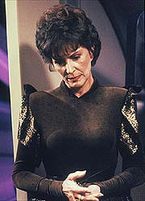
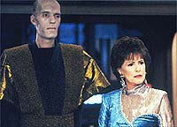
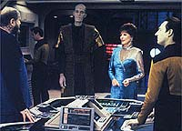
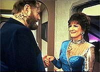
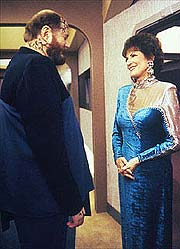

|
MANCHETE
DO EPISDIO
Histria
no desenvolve discusso sobre
responsabilidades sociais com idosos
Episdio
anterior | Prximo
episdio
Sinopse:
Data Estelar: 44805.3.
Durante uma visita a bordo da USS Enterprise, a mo de Deanna Troi,
Lwaxana, se apaixona pelo dr. Timicin, do planeta Kaelon II. O
reservado cientista, que requisitou a ajuda da Federao em uma
tentativa de salvar seu planeta, tambm est interessado na
embaixadora, e os dois passam a se encontrar.
 Timicin
pretende usar os recursos da nave para testar um meio de revitalizar
o sol moribundo de Kaelon II. A Enterprise leva-o a uma estrela
similar de seu planeta em uma regio remota da galxia, onde
ele pode testar suas teorias.
Com a ajuda da tripulao, Timicin lana torpedos fotnicos
modificados na estrela, em um esforo de elevar e estabilizar sua
temperatura. De incio, o experimento parece bem-sucedido, mas a
temperatura do sol continua a aumentar e chega a nveis perigosos,
obrigando a nave a deixar a regio e voltar a Kaelon II. Mais
tarde, quando Lwaxana tenta reconsolar o cientista, ele revela que
est voltando para casa para morrer.
Lwaxana vai imediatamente at o gabinete de Picard, enraivecida
pela descoberta de que Timicin ir em breve participar de um ritual
suicida conhecido como "A Resoluo". O ritual exige que
todos os cidados de Kaelon II se matem ao chegar idade de 60
anos, para eliminar a responsabilidade da sociedade de cuidar dos
idosos. Lwaxana acusa o ritual de assassinato, mas Picard se recusa
a interferir, alegando que o problema est alm de sua jurisdio.
Incapaz de convencer o capito, Lwaxana se concentra em Timicin,
tentando convenc-lo a no seguir a Resoluo. Ele implora que
ele tome o primeiro passo para uma mudana na atual poltica do
planeta.
 O
cientista a princpio recusa-se, mas reconsidera ao descobrir o quo
perto sua pesquisa o levou de salvar o sol de seu planeta. Com isso
em mente, ele pede a Picard asilo a bordo da Enterprise.
O capito concorda, ato que quase coloca a Federao em guerra,
ao despertar a ira do povo de Kaelon II. O ministro da Cincia do
planeta insiste que Timicin volte e envia naves de guerra at a
posio da Enterprise, ordenando que atirem caso Picard tentasse
sair da regio levando o cientista.
Timicin permanece firme em sua deciso de prosseguir com sua vida,
at sua filha ir visit-lo a bordo e pedir que ele aceite os
costumes de seu povo. O pedido sensibiliza o cientista, que decide
voltar para casa e morrer entre seus entes queridos. Lwaxana, como
um desses entes, desce ao planeta para participar do ritual, apesar
de seu sofrimento pela perda.
Comentrios:
"Half a
Life" um ttulo que exprime bem a tnica deste episdio.
A histria principal renderia meio episdio e olhe l. Trata-se
de mais um bom tema a ser trabalhado que foi desperdiado pela
falta de mais combustvel dramtico.
 A
primeira metade do episdio se alimenta nica e exclusivamente dos
prembulos envolvidos no experimento de Timicin, que desde o incio
j estava claramente fadado ao fracasso. Salvo por pequenos interldios
cmicos de Lwaxana Troi (bem pequenos, diga-se de passagem), o episdio
se arrasta at a falha da tentativa de soprar nova vida em uma
estrela moribunda.
Quando finalmente os roteiristas resolvem mergulhar no cerne da
questo --o modo singular pelo qual aquele povo lida com seus
idosos--, parece que no sobrou gua para encher a piscina. As
discusses acabam ficando rasas demais.
A mais feliz colocao feita nesta passagem a que Lwaxana Troi
pergunta a Timicin o porqu de seu povo no aceitar simplesmente
que seu sol est velho e tambm precisa morrer, sem receber
qualquer resposta satisfatria. Naquele momento fica muito claro
para o telespectador que aquele gesto "cultural" de
obrigar idosos a cometer suicdio nada tem a ver com uma moral
especfica, mas apenas com o comodismo de no ter de arcar com as
dificuldades de cuidar dessas pessoas.
 Tirando
esse pequeno lampejo, o episdio se arrasta, do comeo ao fim. O
uso de Lwaxana Troi aqui inovador --pela primeira vez ganhando
uma funo dramtica como protagonista da histria, em vez de
apenas fazer um papel cmico--, mas no consegue despertar o
personagem mais do que o que j havia sido feito anteriormente
(absolutamente nada demais, para deixar claro).
A idia de discutir a atitude das novas geraes para com as
anteriores no s vlida como atual, mas em "Half a
Life" no se pode dizer que o tema foi bem abordado.
Tirando Picard (mas no muito), nenhum dos personagens regulares
ganhou destaque na histria.
O fato de um recorrente e um convidado protagonizarem o episdio
tambm prejudica na hora de manter uma conexo com o pblico
--ningum liga muito para Timicin ou Lwaxana Troi. Se a questo
envolvesse Data, Riker ou a dra. Crusher a audincia se envolveria
muito mais com o enredo.
 Por
fim, vale apenas lembrar que nada disso teria sido possvel sem uma
grande ajuda da Primeira Diretriz --que pode at no ser muito
correta s vezes, mas sempre um tremendo instrumento criador de
dilemas para nossos tripulantes. Para evitar a Picard o embarao de
ter de quebr-la no final do episdio, Timicin decide, convencido
por sua filha, voltar, embora reconhea que no est retornando
por concordar com sua cultura, mas apenas por no ser forte o
suficiente para se rebelar contra ela.
"Half a Life" um daqueles que possui uma boa
premissa, mas acaba no se traduzindo em um bom episdio, quer
seja pela fraqueza dos personagens envolvidos, quer seja pela perda
de tempo com subtramas previsveis e bobas, ou ainda pela baixa
profundidade com que o tema tratado. Podia ter sido to
melhor...
Citaes:
Worf - "Mrs.
Troi. I must protest your unauthorized presence on the bridge."
("Senhora Troi. Eu preciso protestar contra sua presena no-autorizada
na ponte.")
Lwaxana - "What does that little one do, Mr. Wulf?"
("O que esse botozinho faz, sr. Wulf?")
Worf - "PLEASE Madam, that is a torpedo-launch initiator!
...And it is ...Mr. Worf, not Wulf."
("POR FAVOR madame, este um iniciador de lanamento de
torpedo! ...E ...Sr. Worf, no Wulf.")
Trivia:
 Aps "Mnage a Troi",
Majel Barrett volta a interpretar a me da conselheira Troi,
Lwaxana. Majel interpretou na Srie Clssica a enfermeira
Chapel, e no episdio-piloto "The
Cage", que nunca foi ao ar, a primeira-oficial do capito
Christopher Pike, conhecida como "Number One". O
verdadeiro nome desta personagem nunca foi revelado, mas em histrias
em quadrinhos "no-cannicas", ela foi chamada pelo
capito Pike de "tenente-comandante Robbins". Majel
creditada em "The
Cage" com o pseudnimo M. Leigh Hudec.
Aps "Mnage a Troi",
Majel Barrett volta a interpretar a me da conselheira Troi,
Lwaxana. Majel interpretou na Srie Clssica a enfermeira
Chapel, e no episdio-piloto "The
Cage", que nunca foi ao ar, a primeira-oficial do capito
Christopher Pike, conhecida como "Number One". O
verdadeiro nome desta personagem nunca foi revelado, mas em histrias
em quadrinhos "no-cannicas", ela foi chamada pelo
capito Pike de "tenente-comandante Robbins". Majel
creditada em "The
Cage" com o pseudnimo M. Leigh Hudec.
Majel
Barrett participou ao todo de seis episdios da Nova Gerao
como Lwaxana Troi e fez a voz do computador da Enterprise incontveis
vezes, sendo creditada como "computer voice" em 35 delas.
Majel ainda interpretou Lwaxana algumas vezes em Deep Space Nine,
alm de fazer a voz do computador nas demais sries de Jornada.
David
Ogden Stiers, que faz o dr. Timicin neste episdio, mais
conhecido do pblico por sua participao no seriado "Mash".
Michelle
Forbes, que a partir do excelente episdio da quinta temporada "Ensign
Ro" seria efetivada como a personagem Bajoriana
recorrente "alferes Ro", faz uma pequena participao
neste episdio como Dara. Como Ro, Michelle atuou em oito episdios
da Nova Gerao.
Neste
episdio citado o planeta Rigel IV, uma referncia ao
planeta-natal do personagem Hengist, do episdio da Srie Clssica
"Wolf in the Fold".
Ficha
tcnica:
Histria de Ted Roberts e Peter
Allan Fields
Roteiro de Peter Allan Fields
Direo de Les Landau
Exibido em 06/05/1991
Produo: 096
Elenco:
Patrick Stewart como
Jean-Luc Picard
Jonathan Frakes como William Thomas Riker
Brent Spiner como Data
LeVar Burton como Geordi La Forge
Michael Dorn como Worf
Gates McFadden como Beverly Crusher
Marina Sirtis como Deanna Troi
Elenco convidado:
Majel
Barrett-Roddenberry como Lwaxana Troi
David Ogden Stiers como dr. Timicin
Michelle Forbes como Dara
Colm Meaney como Miles Edward O'Brien
Terrence E. McNally como B'Tardat
Caryl Struyken como Sr. Homn
Episdio
anterior | Prximo
episdio
|